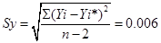
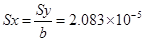

International Journal of Environmental Pollution and Remediation (IJEPR)
ISSN: 1929-2732

Volume 2 - Year 2014 - Pages 18-23
DOI: 10.11159/ijepr.2014.003
Relationship for the Concentration of Dissolved Organic Matter from Corn Straw with Absorbance by using UV–Visible Spectrophotometer
Shamshad Khan¹, Wu Yaoguo¹, Zhang Xiaoyan¹, Xu Youning², Zhang Jianghua²,Hu Sihai²
¹Department of Applied Chemistry, School of Science,
Northwestern Polytechnical University, Xi'an, 710072, China
shamshadkhan768@yahoo.com; wuygal@nwpu.edu.cn
²Xi'an Institute of Geology and Mineral Resources, Xi'an, 710054, China
Abstract - A rapid technique to estimate the concentration of dissolved organic matter from corn straw using the UV–visible spectrophotometer was developed in this study. We tested samples and suitable relationship for the concentration of dissolved organic matter (DOM) with absorbance. The results demonstrated that the relationship between absorbance (254nm) and concentration of DOM is good surrogate to estimate the concentration of the DOM from corn straw. Absorption of DOM verified that it doesn't depend on pH in normal working range. Relatively, this method is very less time consuming, and low cost than the Chemical oxygen demand method and TOC–analyzer method. The absorbance (254nm) with concentration of DOM has linear relationship with high correlation (R2 = 0.998). It is suggested that the absorbance (254nm) should be used as a surrogate for concentration of DOM from corn straw.
Keywords: Absorbance, chemical oxygen demand, corn straw, dissolved organic matter, concentration.
© Copyright 2015 Authors - This is an Open Access article published under the Creative Commons Attribution License terms. Unrestricted use, distribution, and reproduction in any medium are permitted, provided the original work is properly cited.
Date Received: 2013-09-15
Date Accepted: 2014-02-08
Date Published: 2014-03-05
1. Introduction
Dissolved organic matter is a complex heterogeneous mixture of organic compounds containing the carboxylic, carbonyl, methoxyl, hydroxyl, and phenolic functional groups and the major source of these organic matters are living organisms deposited on or within soil components that play significant role in plant nutrition and soil environments [1]. If soil contains the sufficient amount of organic matter, there the plants grow are better, produce higher yields; and the nutritional quality of harvested foods and feeds are greater. During the last decay dissolved organic matter is become key parameter in agriculture and environmental fields because of its involvement in mobilization and transportation of acidty, colloids, nutrients, metals and pollutants and serves as a substrate for microbial growth [2–6]. Although various literatures have been considered to the consequence of DOM on the plants and soil environment, but not many study are available on characterization of DOM in water. Primary compositions of elements in DOM are carbon (52-56%), hydrogen (4-5.5%), oxygen (33-39%), and small fractions of sulfur, nitrogen, and phosphorus [7]. Christman et al. [8] were suggested the hypothetical structures for DOM on degradation of the products. However, it is difficult to describe the specific chemical structure of DOM due to its heterogeneous organic matter characters.
Yet now, there is no direct method is accessible to estimate the concentration of DOM in water because of its highly complicated structures [8,9]. Two of the most widely used methods to surrogate the concentration of DOM are the total organic carbon analyzer (TOC) and Chemical oxygen demand methods. Previous method estimates the concentration of organic carbon content in water which proxy the concentration of DOM. Afterward estimates the quantity of oxygen required to oxidize the organic materials which indicate the organic matter in water. But such methods required the much time, expensive chemicals, sophisticated instrument and require a large sample volume for the analysis of concentration of DOM of each sample. These shortcomings have lead to the improvement of spectroscopic methods towards the quantification of DOM concentration.
Ultraviolet (UV) absorption spectrophotometer is generally used to study various properties of the DOC, such as its aromaticity, hydrophobic content, and biodegradability [2,10–12] because DOM have constitute such type of components which have capacity to absorb the ultraviolet light for example unsaturated aliphatic bonds and benzenoid type components [13,14]. Specific absorbance at different specific wavelengths has been used to measure the aromaticity, hydrophobic content, apparent molecular weight and size, and biodegradability [15–18].UV-absorbance is good surrogate the concentration of DOM specifically concentration of aromaticity in DOM at 254 nm absorbance [13,18]. Anton et al. [19] reported that UV-absorbance showed much closed linear relationship (0.99) between concentration of DOM and UV–254 absorbance in throughfall and soil solution samples. Aromaticity fraction in DOM is surrogate to estimate dissolved organic matter by using absorbance 254nm because of the absorbance of organic solutes is directly proportional to their concentration of aromatic compounds [20].This correlation was considered here to develop the relationship for concentrations of DOM in water extracted from corn straw and absorbance.
Based on the above discussion, absorbance of a water sample at specific wavelength 254nm is good proxy to the concentration of DOM. Standard calibration curve should be able to indicate the total concentration of DOM from corn straw with absorbance 254nm. Thus the aim of this study to establish relationship between absorbance 254nm and concentration of DOM from corn straw by using UV–visible spectrophotometer should be able to surrogate the concentration of DOM from corn straw. We will also demonstrate the effect of pH on absorbance at 254nm.
2. Material and Methods
Corn Straw is used as source of DOM in water. Extractions of DOM from corn straw just carried out by follow the method mentioned by Zhongqi et al.[6,21]. In concise, initially corn straw air-dried, and ground to pass through a 1-mm sieve. Just before the absorbance experiments, mix with 40:1 (v/w) water to sample proportion using cold water, periodic shaking it 18 h, suspension were centrifuged (900×g) for 30 min and filtered through 0.45-μm pore size polycarbonate filters. Aliquots of water samples of corn straw were analyzed with total carbon analyzer (Shimadzu TOC 5000A) after filtration through 0.45-μm pore size polycarbonate filters. Stock solution of 563.8mg L-1 DOM was used to prepare the standard solutions containing different amount of dissolved organic matter. UV–visible absorbance measurements were performed on a high precision, double–beam spectrophotometer (model 2550) between 220 and 450nm with the reference of distilled water. A quartz cell with 1.0 cm path length was used. Buffer solutions to maintain pH were not need because a set of 5mg L-1 of DOM solutions prepared at different pH have demonstrated that UV–visible spectra were not significantly affected by the 4 to 10 range of pH as shown in Figure 1. The negligible effect of pH on the DOM samples presented in this study is less than observed for soil humic substances [22]. This result also is in agreement of the observed result of Wang and Hsieh who reported that humic acids solutions prepared at different pH have showed that the UV–visible spectra were not affected by the pH at the normal working range. The minute dependency of UV absorbance on pH in the range of 4–10 means that, within this pH range, it is unnecessary to adjust the pH to a constant value to compare results between samples.
3. Results and Discussion
As can be seen from figure 2, that absorbance increases with increasing the concentrations of DOM. The absorbance at wavelength length less than 280nm is much greater than that of longer wavelength as a result a perfect slope is obtained at the shorter wavelength (<285nm), when concentration of DOM is higher than this trend is much more visible as seen in the spectra. The absorbance measured at greater wavelength (>400nm) is comparatively less than that absorbance at 280-400nm.This result almost agrees with the experimental results of Wang and Hsieh [23], who reported that the absorbance of humic acids at wavelength length less than 250nm is causes a sharp slope at the longer wavelength (<300), and absorbance at longer wavelength (>400nm) is relatively low as compared with those observed at UV and sub-UV ranges (200 –400 nm).
For the validation of these experimental results (Figure 2), it should follow Beer–Lambert law because Beer–Lambert law is independent of wavelength. The Beer–Lambert law has been examined at wavelengths 220, 240, 250, 280, 290, 300, 310, 320, 330, 340, 350, 360, 370, 380, 390, 400, 430, 450nm which showed the linearity with correlation coefficients (R2) greater than 0.99. It implies that Beer–Lambert law is applicable between range of 220-450nm as shown in figure 3.
In order to justify the UV method, we developed the relation between the absorbance at 254nm and various concentrations of DOM determined by carbon analyzer. As shown in figure 4, the relationship between the absorbance (254nm) and concentration of DOM, the UV absorbance at 254nm is highly correlated (R2 =0.998; P<0.0001) with concentration of DOM determined by carbon analyzer. So it is suggested that the absorbance at 254nm should be used as a proxy for concentration of DOM from corn straw. Such correlation between absorbance and concentration of DOM determined by Huoliang et al [24] for the printing and dyeing waste water as shown in figure 4.
The equation of the least squares regression line of figure 4 for corn samples is:
|
DOM (mg L-1) = 288.078× absorbance (254nm) + 1.3 |
(1) |
In the above equation 1, 288.078 and 1.3 are representing the slope and y-intercept respectively. The intercept of the regression line shows the presence of 1.3 mg L-1 of non-UV absorbing DOM, possibly due to the organic matter containing no chromophores absorbing at 254nm. These could include saturated aliphatic compounds, low molecular weight oily acids, or carbohydrates. Lower limit detection is a significant affecting factor on the precision and accuracy of the measure concentrations in analytical chemistry. We have calculated lower limit of detection 6.248×10-5mg L-1 from calibration graph of figure 4 by the following phenomena. The actual absorbance (response points) on Y- axis composing the line usually do not fall exactly on the line for the "fitting" of the calibration graph (Figure 4). Hence, random errors were implied. The parameters for calculating errors due to calibration graph in figure 4 using equation 1 are in shown table 1.
Table 1. Parameters for calculating errors due to calibration graph of figure 4.
|
Xi |
Yi |
Yi* |
(Yi- Yi*) |
(Yi-Yi*)2 |
|
2 |
0.0024 |
0.0024 |
0 |
0 |
|
20 |
0.0650 |
0.0649 |
0.0001 |
1.0×10-8 |
|
67.66 |
0.2231 |
0.2303 |
-0.0072 |
5.184×10-5 |
|
90.21 |
0.3145 |
0.3086 |
0.0059 |
3.481×10-5 |
|
112.76 |
0.3833 |
0.3869 |
-0.0036 |
1.29×10-5 |
|
135.31 |
0.4750 |
0.4652 |
0.0098 |
9.60×10-5 |
|
157.86 |
0.5435 |
0.5435 |
0 |
0 |
|
180.42 |
0.6241 |
0.6218 |
0.0023 |
5.29×10-6 |
|
202.97 |
0.6929 |
0.7000 |
-0.0071 |
5.04×10-5 |
|
∑(Yi-Yi*)2= 2.512×10-4 |
||||
The standard error of the y-estimate was calculated by Equation 2.
|
 |
(2) |
Where Yi* is "fitted" y-value for each xi, (calculated from Eq. 1). Thus, Yi- Yi* is the vertical deviation of the found y-values from the line and "n" is number of calibration points.
This uncertainty about the y-values (the fitted y-values) is transferred to the corresponding concentrations of the unknowns on the x-axis and can be expressed by the standard deviation of the obtained x-value. The exact calculation is rather complex but a workable approximation can be calculated with:
|
 |
(3) |
So Lower Limit of Detection derived from a calibration graph was calculated finally by using following equation:
LLD = 3 × Sx = 6.248×10-5
This is very convenient and economical for determination of concentration of DOM from corn straw. Data presented in Figure 5 compare the values of concentrations of DOM estimated by TOC carbon analyzer and UV–visible spectrophotometer at 254nm. A strong linear correlation (R2>0.99) exists between these two methods.
Other methods like Chemical oxygen method and TOC analyzer method are more expensive, time consuming and need of more sophisticated instrument but in this method no chemical is required and very commonly using device needed like UV–Visible Spectrophotometer. Another advantage is that in normal working range of pH no need to use buffer solutions because changes of pH within normal working ranges has no effect on this method.
4. Conclusion
A very highly linear correlationship (R2=0.998) is illustrated between absorbance (254nm) and concentration of DOM in water from corn straw. UV–visible spectrophotometer method is very straightforward, fast and low-priced alternative for assessment of DOM. This relation has advantage over common methods for estimation of DOM with less time consuming. It is also working well in normal working pH ranges (4-10).
Acknowledgements
This work was supported by the Land and Resources Scientific Research of China from special fund (20111020) in the public interest, the project titled "survey and assessment of groundwater pollution in main cities of Northwestern China (1212011220982)" and "NPU Foundation for Fundamental Research (NPU-FFR-JCR20130145)".
References
[1] H.O. Neung, A.P. Brian, A.M. Philip, J.H. Peter, M.B. Sandra, O. Noriaki, M.L. Kavvas, A.B. Brian, R.H. William "The role of irrigation runoff and winter rainfall on dissolved organic carbon loads in an agricultural watershed" Agriculture, Ecosystems and Environment, 179(1), 2013, pp.1–10. View Article
[2] D. Jorg, K. Klaus "Estimation of the hydrophobic fraction of dissolved organic matter in water samples using UV photometry" Water Research, 36(20), 2002, pp. 5037–5044. View Article
[3] R.M.W. Amon, R. Benner "Bacterial utilization of different size classes of dissolved organic matter" Limnology and Oceanography, 41(l), 1996, pp. 41-51. View Article
[4] A.L. Bonnie, M.C. Rose, S.W. Howard "Changes in dissolved organic matter fluorescence and disinfectionbyproduct formation from UV and subsequent chlorination/chloramination" Journal of Hazardous Materials, 264(1), 2014, pp. 411–419. View Article
[5] G. Rachel, J.H. Peter, W. Naomi, F. Christopher "Dissolved organic carbon and trihalomethane precursor removal at a UK upland water treatment works" Science of the Total Environment. 468–469(1), 2014, pp.228–239. View Article
[6] K. Shamshad, W. Yaoguo, Z. Xiaoyan, H. Sihai, L. Tao, F. Yilin, L. Qiuge "Influence of dissolved organic matter from corn straw on Zn and Cu sorption to Chinese loess" Toxicological & Environmental Chemistry, 95(8), 2013, pp.1318-1327. View Article
[7] D.A. Reckhow, P.C. Singer, R.L. Malcolm "Chlorination of humic materials: by product formation and chemical interpretations" Environmental science & technology, 24(11), 1990, pp. 1655– 1664. View Article
[8] R.F. Christman, D.L. Norwood, Y. Seo, F.H. Frimmel "Humic substances: II. In search of structure" In: Hayes, M.H.B., Mac-Carty, P., Malcolm, R.L., Swift, R.S. (eds).Publishing Wiley, Chichester, England, 1985, pp. 451-463. View Article
[9] G.G. Choudhry "Humic substances. structural, photophysical, photochemical and free radical aspects and interactions with environmental chemicals" Gordon & Breach Publishers, New York, 1984, pp. 98-106. View Article
[10] C.S. Uyguner, C. Hellriegel, W. Otto, C. Larive "Characterization of humic substances: Implications for trihalomethane formation" Analytical and Bioanalytical Chemistry, 378(6), 2004, pp.1579–1586. View Article
[11] J.P. Croué, M.F. Benedetti, D. Violleau, J.A. Leenheer "Characterization and copper binding of humic and nonhumic organic matter isolated from the South Platte River: Evidence for the presence of nitrogenous binding site" Environmental Science & Technology, 37(2), 2003, pp.328– 336. View Article
[12] K. Hautala, J. Peuravuori, K. Pihlaja "Measurement of aquatic humus content by spectroscopic analyses" Water Research, 34(1), 2000, pp.246–258. View Article
[13] A.U. Eaes, P.R. Bloom "Fulvic acid ultraviolet-visible spectra: Influence of solvent and pH" Soil Science Society of America Journal, 54(5), 1990, pp. 1248-1254. View Article
[14] S.J. Traina, J. Novak, N.E. Smeck "An Ultraviolet Absorbance Method of Estimating the Percent Aromatic Carbon Content of Humic Acids" Journal of Environmental Quality, 19(1), 1990, pp.151-153. View Article
[15] M. Simonsson, K. Kaiser, F. Andreux, J. Ranger "Estimating nitrate, dissolved organic carbon and DOC fractions in forest floor leachates using ultraviolet absorbance spectra and multivariate analysis" Geoderma.124, 2005, pp.157–168. View Article
[16] K. Kalbitz, J. Schmerwitz, D. Schwesig, E. Matzner "Biodegradation of soil-derived dissolved organic matter as related to its properties" Geoderma, 113, 2003, pp.273–291. View Article
[17] J. Peuravuori, K. Pihlaja "Molecular size distribution and spectroscopic properties of aquatic humic substances" Analytica Chimica Acta, 337 (20), 1997, pp.133–149. View Article
[18] Y. Chin, A. George, E. O'Loughlin "Molecular Weight, Polydispersity, and Spectroscopic Properties of Aquatic Humic Substances" Environmental science & technology, 28 (11), 1994, pp. 1853-1858. View Article
[19] B. Anton, S.S. Ronald, M. Axel, W.W. Walter "Estimating dissolved organic carbon in natural waters by UV absorbance (254 nm)" Journal of Plant Nutrition and Soil Science, 159(6), 1996, pp.605-607. View Article
[20] B.A. Bergamaschi, M.S. Fram, C. Kendall, S.R. Silva, G.R. Aiken, R. Fujii "Carbon isotope constraints on the contribution of plant material to the natural precursors of trihalomethanes" Organic Geochemistry, 30(8), 1999, pp. 835–842. View Article
[21] H. Zhongqi, M. Jingdong, W.C. Honeycutt, O. Tsutomu, J.F. Hunt, J.C.M. Barbara "Characterization of plant-derived water extractable organic matter by multiple spectroscopic techniques" Biology and Fertility of Soils, 45(6), 2009, pp.609-616. View Article
[22] P.R. Bloom, J. Leenheer "Vibrational, Electronic, and Highenergy Spectroscopic Methods for Characterizing Humic Substances" In Humic Substances II: In Search of Structure; Hayes, M. H. B., Malcolm, R., Swift, R. S., Eds.; John Wiley & Sons: New York, 1989, Chapter 14, pp. 409-446. View Article
[23] G. Wang, S. Hsieh, "Monitoring natural organic matter in water with scanning spectrophotometer" Environment International, 26 (4), 2001, pp. 205-212. View Article
[24] K. Huoliang, W. Huifang "A Rapid Determination Method of Chemical Oxygen Demand in Printing and Dyeing Wastewater Using Ultraviolet Spectroscopy" Water Environment Research, 81(11), 2009, pp. 2381-2386. View Article